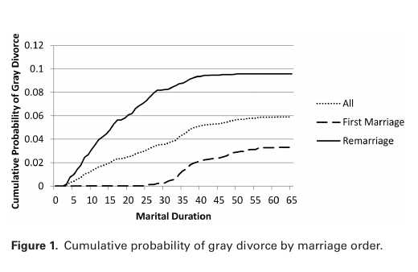
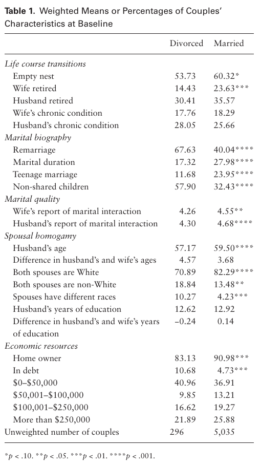
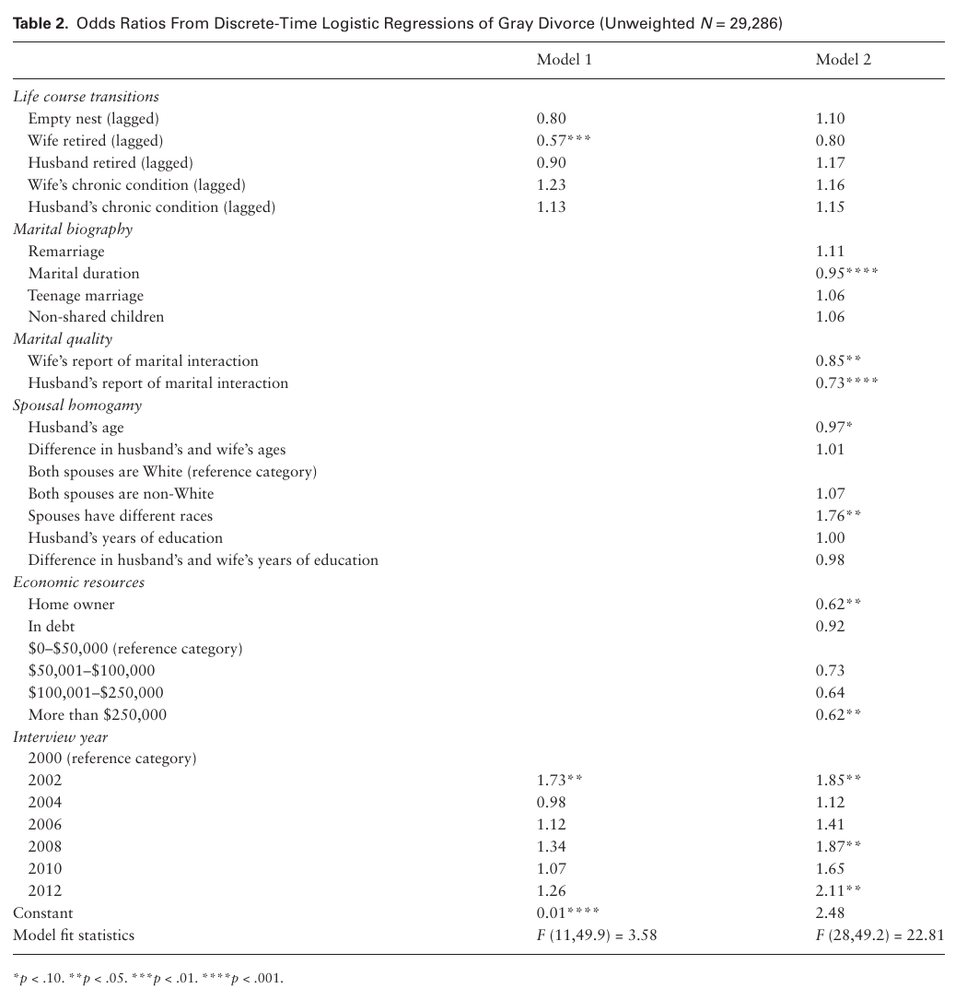

I-Fen Lin · Susan L. Brown · Matthew R. Wright · Anna M. Hammersmith
Department of Sociology, Bowling Green State University, Ohio. The Journals of Gerontology: Series B, Social Sciences, 73(6), 1022–1031 (2018). DOI: 10.1093/geronb/gbw164. Advance Access publication December 15, 2016.
Correspondence: I-Fen Lin, PhD, Department of Sociology, Bowling Green State University, 217 Williams Hall, Bowling Green, OH 43403; ifenlin@bgsu.edu. Received July 18, 2016; Editorial Decision date November 18, 2016. Decision Editor: Deborah Carr, PhD.
© The Author(s) 2016. Published by Oxford University Press on behalf of The Gerontological Society of America. All rights reserved. For permissions, please e-mail: journals.permissions@oup.com.
Abstract
Objectives: Increasingly, older adults are experiencing divorce, yet little is known about the risk factors associated with divorce after age 50 (termed “gray divorce”). Guided by a life course perspective, our study examined whether key later life turning points are related to gray divorce.
Method: We used data from the 1998–2012 Health and Retirement Study to conduct a prospective, couple-level discrete-time event history analysis of the antecedents of gray divorce. Our models incorporated key turning points (empty nest, retirement, and poor health) as well as demographic characteristics and economic resources.
Results: Contrary to our expectations, the onset of an empty nest, the wife’s or husband’s retirement, and the wife’s or husband’s chronic conditions were unrelated to the likelihood of gray divorce. Rather, factors traditionally associated with divorce among younger adults were also salient for older adults. Marital duration, marital quality, home ownership, and wealth were negatively related to the risk of gray divorce.
Discussion: Gray divorce is especially likely to occur among couples who are socially and economically disadvantaged, raising new questions about the consequences of gray divorce for individual health and well-being.
Keywords
Chronic conditions—Empty nest—Marital biography—Marital quality—Retirement
Divorce among middle-aged and older adults is on the rise. A recent study shows that the rate of gray divorce, a term that refers to divorce among persons aged 50 and older, doubled between 1990 and 2010 (Brown & Lin, 2012). The doubling of the gray divorce rate coupled with the aging of the population means that a larger share of individuals experiencing divorce today are in the second half of life. In 1990, fewer than 1 in 10 people getting divorced were aged 50 or older. By 2010, the share exceeded one in four (Brown & Lin, 2012). Gray divorce now constitutes a sizeable share of all divorces.
Despite the rapid growth in the gray divorce rate, little is known about the antecedents of divorce in later life (Wu & Schimmele, 2007). A handful of studies published in the 1980s and early 1990s examined the correlates of divorce among older adults, but these studies are now dated because they preceded the increase in gray divorce (Berardo, 1982; Hammond & Muller, 1992; Uhlenberg & Myers, 1981). Over a decade ago, the AARP conducted a cross-sectional study of divorce after age 40, although they did not capture pre-divorce characteristics (Montenegro, 2004). More recently, Brown and Lin (2012) documented the rise in the gray divorce rate over the past few decades, yet their analysis provided only a limited assessment of the correlates of gray divorce using basic cross-sectional Census data. Also, Karraker and Latham (2015) examined whether a health decline is related to gray divorce, but their approach relied on a select sample of couples who were physically healthy at the outset, and thus their findings are not generalizable to all married older adults at risk of gray divorce. In short, research has not identified the risk factors for gray divorce, a startling omission given the acceleration in the gray divorce rate.
We use prospective, longitudinal data from the 1998–2012 Health and Retirement Study (HRS) to examine the factors associated with divorce among married couples in which at least one spouse is aged 50 or older. Guided by the life course perspective, we focus on three key turning points in the mid- and later-life course that could heighten the risk of divorce: an empty nest, retirement, and failing health. We examine whether these turning points are associated with gray divorce net of other demographic and economic characteristics. The HRS is ideal for our purposes because it includes time-varying information on a large sample of married couples. Indeed, the HRS has data for both spouses, permitting a couple-level modeling approach that incorporates the characteristics and experiences of both the wife and the husband. The findings from our study will yield new insights on gray divorce by uncovering the factors related to a couple’s risk of divorce during mid and later life.
Background
In 1990, about 5 in 1,000 married persons aged 50 and older experienced a divorce in the past year. By 2010, the number doubled to 10 per 1,000 (Brown & Lin, 2012). By comparison, for middle-aged (50–64) adults, the divorce rate rose from 7 to 13 per 1,000 between 1990 and 2010. For older (65 and older) adults the absolute levels were rather low but the growth over the two decade period reflected nearly a tripling (from 1.8 to 4.8 per 1,000) in the divorce rate for this age group. These patterns are striking when considered in terms of the broader context: the gray divorce rate climbed whereas the overall divorce rate remained pretty stable during this 20-year period (Kennedy & Ruggles, 2014).
The gray divorce revolution was not unexpected. Over 30 years ago, researchers argued that older adult divorce would be a growing trend (Berardo, 1982; Hammond & Muller, 1992). Uhlenberg and Myers (1981) identified several reasons why the divorce rate for older adults would rise. First, a growing share of older adults is in a higher order marriage, reflecting divorce experienced at earlier stages of the life course. Today’s older adults are the generation that experienced the divorce revolution of the 1970s as young adults. Many of these divorcees eventually remarried, and remarriages are considerably more likely to end in divorce than are first marriages. Second, divorce in the United States is common, and thus older adults will continue to be more accepting of divorce in the future as either they or people around them experience divorce. Third, rising employment among wives makes divorce a viable option because it provides women with the economic autonomy to support themselves outside of marriage. Finally, longer life expectancies ultimately lower the odds that marriages end through death and lengthen the duration of exposure to the risk of divorce (Uhlenberg & Myers, 1981).
A Life Course Perspective on Gray Divorce
Gray divorce may be presaged by life course experiences that uniquely characterize older adulthood. An empty nest, retirement, or failing health are normative events in later life that may operate as “turning points” (Elder, Johnson, & Crosnoe, 2003) in a couple’s marriage and ultimately undermine marital stability. During the middle years of life, most married couples are rearing children. An empty nest opens a new chapter in a marriage. On the one hand, the offspring launching phase implies that there are fewer household burdens on couples, freeing them to spend more time together. There tends to be a modest uptick in marital satisfaction following the transition to an empty nest (Gorchoff, John, & Helson, 2008). On the other hand, the absence of resident children removes a potential barrier to divorce. Children are the glue holding some couples together. An empty nest can lay bare the couple’s relationship strains or distance that emerges without the buffer of resident children. One study found that an empty nest is related to a higher risk of divorce among the middle aged (Hiedemann, Suhomlinova & O’Rand, 1998).
Retirement allows more time for couple activities and reduces work-related stress that can spill over into the marital relationship. It is a traditional marker of a couple’s golden years, but again the experience can be a turning point that operates much like an empty nest. For couples with a strong relationship, retirement could be benign or even advantageous (Wickrama, O’Neal, & Lorenz, 2013). Spouses with little in common or who have grown apart may reassess their marriages upon retirement and decide to call it quits (Canham, Mahmood, Stott, Sixsmith, & O’Rourke, 2014).
Health problems rise with age. Declining health can fundamentally alter marital dynamics as spouses adjust to a new reality. Poor health may have spillover effects on marital quality, reducing marital stability, and heightening the odds of divorce (Yorgason, Booth, & Johnson, 2008). Additionally, spouses are the primary caregiver, and caregiving stress often causes marital tension (Booth & Johnson, 1994) which could increase the chances of divorce. Among healthy middle-aged couples, the onset of illness for the wife is positively associated with divorce. Nonetheless, onset of illness for the husband is unrelated to the risk of divorce (Karraker & Latham, 2015).
These life course experiences probably operate through marital quality, which tends to decline over time and is negatively associated with divorce (Karraker & Latham, 2015; Umberson, Williams, Powers, Chen, & Campbell, 2005). High-quality marriages may be less vulnerable to these life course experiences, providing a buffer against change. In fact, all of these transitions bring spouses into closer contact with one another, which seemingly would be desirable for those couples with high marital quality, but potentially disruptive for those in lower quality marriages.
Demographic Predictors of Gray Divorce
In addition to the key life turning points that are emblematic of the later life course for many older adults, several other factors are related to divorce in the general population (Amato, 2010; White, 1990) and thus we examine their relevance for gray divorce. These factors characterize the marital life course more broadly and as such they align with the main themes of the life course perspective (Elder, 1994; Spitze & South, 1985).
Marital biography
According to the life course perspective, current events and experiences are linked to earlier transitions (Elder, 1994; Uhlenberg, 1996). The marital biography, captured by marriage order and marriage duration, is integral to understanding the risk of gray divorce. The gray divorce rate is 2.5 times higher for those in a remarriage than a first marriage. Roughly half of those who experience a gray divorce were in a remarriage. In contrast, 80% of those who remain married are in a first marriage. The marriage order differential in part reflects variation in the risk of divorce by marital duration. Shorter marriages are at higher risk of gray divorce than longer marriages and shorter marriages are disproportionately remarriages (Brown & Lin, 2012). Additionally, marrying as a teenager is a well-established risk factor for divorce. Among women who married during the 1970s and 1980s, the risk of divorce was twice as high for those who married as teens versus at later ages (Martin & Bumpass, 1989). Thus, having married as a teen could be related to a heightened odds of gray divorce among today’s middle-aged and older adults. Finally, married stepfamilies are especially likely to disrupt (Sweeney, 2010). Non-shared children, the defining feature of a stepfamily, often create significant relationship challenges for married couples that can be destabilizing (Hetherington & Jodl, 1994). Given the high risk of gray divorce for those in remarriages (many but not all of which could involve non-shared children), we consider whether non-shared children has an independent positive association with risk of gray divorce.
Marital quality
Individuals construct their own life trajectories through the choices they make within the opportunities and constraints of social circumstance (Elder, 1994). Marriage as a lifelong institution appears to be a weakening norm. A generation or two ago, couples might have remained in these empty shell marriages rather than get divorced. Nowadays, our norm of individualized marriage and the linkage between marriage and personal fulfillment has reduced the stigma of divorce. The emphasis on self-fulfillment, communication, and flexible roles signals the high value placed on marriage and suggests that divorce is an acceptable solution to a lower quality marriage (Cherlin, 2009).
Spousal homogamy and shared economic resources
Couples’ lives are linked interdependently. Spouses who differ by age, race, or education may share different values and thus are at greater risk of divorce. Although prior studies have shown that age and a college education are negatively associated with gray divorce and Blacks are at higher risk of gray divorce than Whites and Hispanics (Brown & Lin, 2012), empirical evidence on how spousal homogamy relates to the risk of gray divorce is limited. Karraker and Latham (2015) find that husbands who are much older than their wives are more likely to experience a gray divorce. Spousal heterogamy in race and education is unrelated to gray divorce (Wilson & Waddoups, 2002). Additionally, household assets and home ownership are two factors that are related to lower odds of divorce but the limited evidence to date does not point to significant associations with gray divorce (Karraker & Latham, 2015). The absence of associations between these indicators and gray divorce may be an artifact of the select sample examined by Karraker and Latham (2015), whose focus was on the role of illness onset for gray divorce among physically healthy couples. We examine these factors among a nationally representative sample of married couples at risk of gray divorce.
The Current Study
The current investigation is designed to examine how key life events, including empty nest, retirement, and poor health, are related to the risk of gray divorce net of the standard divorce predictors (i.e., marital biography, marital quality, spousal homogamy, and economic resources). We anticipate that many of the traditional predictors of divorce operate similarly for gray divorce given the cross-sectional evidence from Brown and Lin (2012), but above and beyond these usual suspects there are unique life events that epitomize the transition to older adulthood and likely play a significant role in the risk of gray divorce.
By examining how gray divorce is related to three turning points that uniquely characterize older adulthood, our study aligns with core tenets of the life course perspective. We also investigate how the marital biography, including marriage order, marital duration, marrying as a teenager, and having non-shared children, is associated with the likelihood of gray divorce. Those who have divorced previously or are in a marriage of shorter duration are more likely to experience divorce again compared with those who are continuously married or in a marriage of longer duration. Similarly, teenage marriage and non-shared children are well-known predictors of divorce (Amato, 2010). We consider both the main and interactive effects of marriage order and marital duration on the likelihood of gray divorce. The association between marriage order and gray divorce may weaken with longer marital durations. Marriage order also may condition how the key life events (i.e., empty nest, retirement, and poor health) are related to divorce. These events could be more consequential for those in remarriages than first marriages because people in higher order marriages have had less time to invest in their marriages to cope with these potentially stressful turning points than people in first marriages.
Additionally, consistent with the life course tenet of human agency, we examine whether today’s middle-aged and older adults who are in a lower quality marriage are more likely to divorce and we address whether the associations between key life events and gray divorce are moderated by marital quality. Finally, in line with the life course perspective, we recognize the interdependence between the life course trajectories of spouses. Although only one spouse may seek a divorce, the characteristics of both spouses, such as age, race, education, and shared economic resources, ultimately shape the likelihood of divorce. In short, our study goes beyond the handful of prior studies by capturing the life course events and characteristics of both husbands and wives to perform a couple-level, prospective examination of the risk factors associated with gray divorce.
Method
Data used in the analysis came from the 1998–2012 HRS, a longitudinal study of a nationally representative, continuous cohort of individuals born before 1960 and their spouses in the United States. The HRS covers a range of topics, including empty nest, retirement, health conditions, and sociodemographic characteristics. Complete marital histories along with detailed information about union dissolution during the study period are available, making the data ideal for the purposes of this study. The HRS began interviewing in 1992 with a cohort of individuals born in 1931–1941 (HRS cohort) and re-interviews have been conducted every other year. In 1998, the HRS cohort was combined with the study of Asset and Health Dynamics among the Oldest Old (AHEAD cohort), a new cohort born in 1924–1930 (children of the Depression era, CODA cohort), and a refresher sample born in 1942–1947 (war baby [WB] cohort) to form a national representative sample of individuals aged 50 or older. This study focuses only on the HRS and WB cohorts because the AHEAD and CODA cohorts did not enter the study until ages 68 or older, and gray divorce most often occurs between ages 50 and 64 (Brown & Lin, 2012). Two more recent cohorts added to the HRS in 2004 and 2010, respectively, were also excluded from the analysis because marital quality questions were not asked. The response rates for the original HRS and WB baseline interviews were 82% and 70%, respectively. The re-interview response rates were above 90%. For this study, sampling weights were used to adjust for the unequal probability of selection (for Blacks, Hispanics, and respondents living in Florida), non-response, and sample attrition (Ofstedal, Weir, Chen, & Wagner, 2011).
We began by constructing a marital history file for all HRS respondents. After extracting all married individuals, we converted the file from the individual level to the couple level. The HRS interviews main respondents and their spouses, providing us with data on both wives and husbands. For couples in which one spouse did not respond, we relied on information reported by the spouse who was interviewed. In rare instances of inconsistent reports, we drew on the wife’s information. In total, the HRS sample consists of 5,566 married couples in which at least one respondent was a member of either the HRS or WB cohort and was interviewed in 1998 or later. During the 1998–2012 period, some respondents experienced a gray divorce and then formed a remarriage with a new spouse. This scenario characterizes 218 of the married couples. These 218 remarriages to a new spouse were excluded so that each respondent contributes only one marriage to the sample. We also excluded same-sex couples (n = 11), couples we observed for only one wave of data (n = 189), and couples that have a baseline weight of 0 (n = 35), resulting in 5,331 couples (29,286 couple-interview-year observations).
Measures
The dependent variable, divorce, was coded 1 if the couple experienced divorce during the couple-interview-year and 0 otherwise.
Three key life-course transitions
The onset of empty nest was coded 1 when the couple’s children moved out of the home and 0 otherwise. The onset of the wife’s and the husband’s retirement were coded 1 when they reported they were (partly) retired and 0 otherwise. Following Karraker and Latham’s work (Karraker & Latham, 2015), we coded the wife or the husband as having a chronic condition when they reported that a doctor diagnosed them with heart disease, cancer, lung disease, or stroke (1 = Yes, 0 = No). Once the couple experienced an empty nest, the wife or husband retired, or the wife or husband was diagnosed with a chronic condition, these life transition variables were coded 1 for the rest of their periods of observation. The couple’s empty nest, wife and husband retirement, and wife and husband chronic health condition statuses were all time-varying variables that were lagged by one interview-wave (i.e., 2 years) in the multivariate analysis to establish the temporal order prior to divorce. This strategy assumed the onset of empty nest at t-2 was predictive of gray divorce at t, for example.
Marital biography
Remarriage was a time-invariant covariate that accounted for whether at least one spouse had been married prior to the current marriage (1 = Yes, 0 = No). Marital duration was a time-varying covariate that represented the number of years spent in the current marriage. Teen marriage, a time-invariant variable, indicated that when the couple married, either the wife or the husband was under age 20 (1 = Yes, 0 = No). Non-shared children was also a time-invariant measure that differentiated between couples who had at least one child with another partner (coded 1) versus only joint children or no children (coded 0).
Marital quality
Marital interaction was captured for wives and husbands. It was constructed from two questions that indicate the wife’s and the husband’s reports of how they allocated their free time together (1 = mostly together, 2 = some together, some apart, 3 = mostly apart) and how much they enjoyed the time spent together (1 = extremely enjoyable, 2 = very enjoyable, 3 = somewhat enjoyable, 4 = not too enjoyable). Because few respondents reported time together as not too enjoyable, we combined this response category with somewhat enjoyable, similar to Bulanda’s study (Bulanda, 2011). Answers to these two questions were summed and reverse coded so that higher values represent more positive marital interaction, ranging from 2 to 6. Since these questions were asked only the first time couples were interviewed, the wife’s and husband’s reports of marital quality were treated as time-invariant covariates. Note that for couples who were first interviewed in 1992 and remained married in 1998, their marital quality scores were obtained from the 1992 interview. For couples who were first interviewed in 1992, broke up, and remarried to other persons by 1998, their marital quality scores were obtained from the interview when they first reported being remarried.
Spousal homogamy
Husband’s age was measured in years and treated as a time-varying covariate. The couple’s age homogamy was defined as the difference between the husband’s and the wife’s ages and thus was time invariant. Racial homogamy, a time-invariant covariate, was captured by whether both spouses were White (reference category), both spouses were non-White (1 = Yes, 0 = No), or spouses belonged to different racial backgrounds (1 = Yes, 0 = No). Husband’s educational attainment was gauged by a continuous measure indicating the total number of years of schooling completed and ranged from 0 to 17. Education homogamy was captured by taking the difference between the husband’s and the wife’s years of schooling. The education measures were time invariant.
Shared economic resources
Home ownership was a time-varying covariate indicating whether the couple owned their home at a given interview-year (1 = Yes, 0 = No). The couple’s assets, also time-varying covariates, were composed of six categories: in debt, $0 to $50,000 (reference category), $50,001 to $100,000, $100,001 to $250,000, and $250,001 or more. Both sets of variables were lagged by one interview-wave (i.e., 2 years) to establish the temporal order prior to divorce.
Analytic Strategy
We began by estimating the survival probabilities for couples by marital duration. Estimates were conducted separately for couples in first marriages versus remarriages to assess the potential for an interaction effect between these two dimensions of the marital biography with the expectation that marriage order was less consequential at higher marital durations. Then we calculated bivariate statistics to show how the means or percentages of each variable differed for the couples who experienced a gray divorce and those who remained married (or were censored). Finally, we conducted the multivariate analyses, which involved estimating discrete-time event history models predicting gray divorce using logistic regression.
Event-history modeling is the most effective approach to handle the problems posed by censoring (e.g., persons continue to be at risk for an event after the observation period ends) as well as time-varying explanatory variables that are integral to process-driven events such as divorce (Allison, 1982). Discrete-time (vs. continuous-time) models are appropriate here because the start and end dates of marriage were measured using time intervals. Discrete-time models have many advantages, including the ease of incorporating time-varying covariates and the use of log linear methods for model estimation. The model is specified as follows:
Pᵢₜ = 1 / [1 + exp(−αₜ − β′xᵢₜ)]
Pᵢₜ is the hazard rate, defined by Pᵢₜ = Pr(T = t | T ≥ t), where T is the discrete random variable giving the uncensored time of event occurrence (Allison, 1982). In other words, Pᵢₜ is the conditional probability that divorce occurs to couple i at time t, given that it has not already occurred. We consider how this hazard rate is a function of time (αₜ) and a vector of explanatory variables (xᵢₜ, with its coefficient vector β). Couples were observed from the earliest time point at which they were (a) married and (b) at least one spouse was aged 50 or older. All couples entered the analysis beginning with the first interview at which they were married (1998 or later). They were censored once they divorced, when one of the spouses died, or at the 2012 interview (or attrition).
The initial model introduced the three later life transition indicators: empty nest, wife’s retirement and husband’s retirement, and wife’s chronic conditions and husband’s chronic conditions. The second model added all of the sociodemographic controls to assess the extent to which the role of transitions was accounted for by the more traditional predictors of divorce. Additional analyses were conducted to examine potential interaction effects for the later life transitions with marital biography and marital quality. All models included interview year dummy variables to account for the effect of time. Gray divorce is more common today than two decades ago (Brown & Lin, 2012). Missing data were minimal. On the core independent measures of life transitions, for example, just 1%–3% of cases were missing. A multiple imputation procedure, Multivariate Imputation using Chained Equations (MICE), was performed using Stata’s mi impute chained command to handle missing cases such that the missing value for a single variable was imputed as a function of other covariates in the analysis (Raghunathan, Lepkowski, van Hoewyk, & Solenberger, 2001; van Buuren, Boshuizen, & Knook, 1999). To preserve the randomness of the imputed variables, the study results were based on five random, multiple-imputed replicates. Both the bivariate and multivariate estimates were weighted using the baseline weights.
Results
Figure 1 shows the cumulative probability of gray divorce for all marriages and separately for first marriages and remarriages by marital duration. In general, the cumulative probability rose with duration, reflecting the accumulation of gray divorces over time. The likelihood of gray divorce among first married couples was essentially zero during the first 20 or so years of marriage and then jumped up beginning at about 30 years duration. This pattern was an artifact of the design: couples in first marriages typically must have remained married for a long time before they would be eligible to experience a gray divorce because nearly all first marriages were formed when the spouses were relatively young, in their twenties or thirties. In contrast, couples entered remarriages at all ages and thus gray divorce among remarried couples exhibited a sharper association with marital duration. Importantly, gray divorce was nearly three times higher among remarried than first married couples among those in marriages of long duration (i.e., 40 or more years). Marital duration was not as protective against divorce for remarried as first married couples. Contrary to our expectations that the marriage order differential in gray divorce would converge at higher marital durations, in fact the likelihood of divorce for couples in remarriages remained persistently high even in marriages of very long duration.

Figure 1. Cumulative probability of gray divorce by marriage order. Accessibility description: Cumulative gray-divorce probability rises with marital duration for all couples. The remarriage curve rises earliest and reaches roughly .095, the all-marriages curve reaches roughly .058, and the first-marriage curve remains near zero until around 30 years before reaching roughly .032.
Bivariate Results
Table 1 show the weighted means or percentages (as appropriate) of all variables measured at baseline separately for couples who divorce versus remain married. For the most part, couples exhibited similar levels of later life transitions regardless of whether they divorced or stayed married. Slightly over one-half had no children in the household (53.73% of couples that divorced and 60.32% of couples that stayed married). The share of divorced couples with a retired wife was significantly lower than it was for couples who remained married (14.43% vs. 23.63%) but the share with retired husbands did not significantly differ (30.41% and 35.57%, respectively). The prevalence of chronic conditions for wives and husbands was nearly the same for couples that divorced and couples that remained married.

Table 1. Weighted Means or Percentages of Couples’ Characteristics at Baseline. Notes: Divorced couples (unweighted n = 296) are compared with married couples (unweighted n = 5,035) across life-course transitions, marital biography, marital quality, spousal homogamy, and economic resources. Asterisk legend: one = p < .10; two = p < .05; three = p < .01; four = p < .001. Exact values and significance markers are preserved in the table image.
The marital biography was related to divorce. Two-thirds (67.63%) of marriages that ended in divorce were remarriages whereas fewer than one-half (40.04%) of marriages that remained intact were remarriages. Not surprisingly, marital duration was negatively related to divorce. The average marital duration for couples that divorce was 17.32 years. For intact marriages, the average was considerably longer at 27.98 years. The proportion of couples who married as teens was just 11.68% for those who divorced versus 23.95% for those who remained married. This unexpected pattern likely reflects the large share of remarriages that ended through gray divorce. Remarriages were not likely to have been formed during the teen years. Among couples who divorced, 57.90% had non-shared children whereas just 32.43% of those who stayed married did.
Both the wife’s and the husband’s marital quality were negatively associated with divorce. In couples that divorced, the average value of wife’s marital quality as 4.26 and the husband’s was 4.30 versus 4.55 and 4.68, respectively, for couples that remained married.
The sociodemographic factors that have been linked to divorce in prior research were largely related to gray divorce in the expected ways. For couples that divorce, husbands were about 2 years younger than for couples that remained married (57.17 vs. 59.50 years old). The average age difference for couples that divorced was comparable to that of couples who stayed married (4.57 vs. 3.68). Racial heterogamy was more common for couples that divorced with 10.27% of spouses of different races. Among intact married couples, the share was just 4.23%. Intact married couples were disproportionately White at 82.29% versus 70.89% among couples that divorced. Husband’s education did not differ between the two groups, hovering at 12. 62 for those who divorced and 12.92 for those still married. In couples that divorced, the education difference was −0.24, meaning the wife’s education exceeded the husband’s. For those who remained married, the average difference was 0.14, signaling husbands reported slightly more education. Economic resources tended to be lower among couples that divorced than remained married. Home ownership stood at 83.13% for divorcing couples versus 90.98% for intact married couples. And the share of couples that were in debt was more than twice as large for couples that divorced (10.68%) than couples that remained married (4.73%).
Multivariate Results
Contrary to our expectations, key later life events were largely unrelated to the risk of divorce, as shown in Model 1 of Table 2. Neither the onset of an empty nest nor the wife’s or the husband’s chronic conditions were associated with divorce. The wife’s transition to retirement was negatively related to divorce. The odds that a couple divorced were about 43% lower for those in which the wife was retired. The husband’s retirement was unrelated to the likelihood of divorce.
Model 2 introduced the marital biography and sociodemographic factors. The association between the wife’s retirement and divorce reduced to non-significance. Other later life transitions were not significantly associated with divorce. The marital biography was closely tied to the risk of divorce. Remarriage and marital duration were highly correlated (r = −0.69) and with both indicators in the model, only marital duration was significantly related to divorce. Without marital duration in the model, remarriage exhibited the expected significant, positive association with divorce (result not shown). The risk of divorce declined with marital duration. Neither teen marriage nor non-shared children were related to divorce. Indeed, the correlation between non-shared children and remarriage was rather large (r = 0.79). Both the wife’s and the husband’s marital quality were negatively associated with divorce. There was also a marginal, negative association between husband’s age and divorce, reflecting the notion that the risk of divorce declines with age. Interracial couples faced odds of divorce that were 1.76 times that of same race couples. There was a negative association between home ownership and divorce, suggesting joint property serves as a barrier to splitting up. Similarly, wealth was negatively related to the likelihood of divorce. The odds of divorce were roughly 38% lower for those with over $250,000 in assets compared with couples whose assets ranged from $0 to 50,000.
Additional analyses were conducted to investigate whether the associations between later life transitions and divorce differed by marital quality, remarriage, or marital duration. No significant interactive effects emerged.

Table 2. Odds Ratios From Discrete-Time Logistic Regressions of Gray Divorce (Unweighted N = 29,286). Notes: Model 1 includes the lagged later-life transitions and interview year; Model 2 adds marital biography, marital quality, spousal homogamy, and economic resources. Asterisk legend: one = p < .10; two = p < .05; three = p < .01; four = p < .001. Exact odds ratios, reference categories, model-fit statistics, and significance markers are preserved in the table image.
Discussion
Despite the rapid rise in gray divorce in recent decades, little is known about the factors associated with a couple’s risk of divorce during middle and later life. Guided by the life course perspective, our study assessed whether three key turning points in the second half of life were related to gray divorce. Specifically, we considered whether the onset of an empty nest, retirement, or poor health was associated with an increased likelihood of divorce among married couples in which at least one spouse was aged 50 or older. Using 14 years of longitudinal data from the HRS, our event history analyses revealed that these turning points were not significant risk factors for divorce. Although there was an initial negative association between the wife’s retirement and gray divorce, it was accounted for by the marital biography, marital quality, demographic characteristics, and economic resources.
Indeed, these more traditional predictors of divorce among younger adults appeared to operate similarly for those over age 50. Marriage order and marital duration were related to divorce with those in remarriages more likely to divorce than those in first marriages. This differential was confounded with marital duration, reflecting the fact that remarriages are of substantially shorter duration, on average, than are first marriages. Marital duration, which was negatively associated with the risk of divorce, absorbed the positive association between marriage order and divorce. Similarly, non-shared children was related to the risk of divorce in the bivariate analyses but not net of remarriage and duration in the multivariate model. The salience of the marital biography for gray divorce aligns with the findings from Brown and Lin’s (2012) study and underscores the enduring consequences of the marital life course for marital stability in the second half of life.
Both the wife’s and the husband’s marital quality were negatively related to divorce, but they did not have an interactive effect. Marital quality also did not modify the associations between the later life transitions and divorce, which was contrary to our expectations. It is possible that the absence of significant interactions was an artifact of the measurement of marital quality, which was captured only when the married couple was first interviewed in the study. Thus, for many of the couples, marital quality was measured years prior to the life course event. Marital quality tends to be pretty stable during the middle and later years (Glenn, 1998), but it is possible that it could change shortly before or after a life course transition. Unfortunately, the HRS does not measure marital quality at each interview.
Some demographic and economic characteristics were related to gray divorce. We considered three types of couple heterogamy: age, race, and education. Interracial couples experienced higher odds of divorce compared with same-race couples. However, age or educational heterogamous couples were no more likely to divorce than their homogamous counterparts. There was no appreciable variation in the risk of divorce by education, which is consistent with other work indicating that education plays a modest role in gray divorce (Brown & Lin, 2012). Home ownership specifically and wealth more broadly served as barriers to divorce. Thus, financial security is protective against divorce.
The findings from our study provide new insights on the antecedents of gray divorce. Later life transitions alone do not derail marriages. Although there is anecdotal evidence that couples wait to divorce once the children are grown and have left the household (Bair, 2007), our work does not support this assertion. The vast majority of Americans are accepting of divorce even when children are involved (Thornton & Young-DeMarco, 2001), suggesting that many dissatisfied couples may see no reason to delay divorce until their nest is empty. Likewise, retirement may be linked to marital quality (Moen, Kim, & Hofmeister, 2001; Szinovacz, 1996), but we find no evidence that it is related to divorce. The absence of an association may reflect the varied constraints and opportunities couples face in this domain. For some couples, retirement is not economically feasible. In contrast, financially secure couples may readily achieve retirement. Still others may experience involuntary retirement or be unwilling to retire despite economic security. These disparate reasons for retirement cannot be captured with the HRS but may explain why we did not observe a relationship between retirement and divorce. Karraker and Latham (2015) found that the risk of divorce climbs following the onset of a chronic condition for the wife among a sample of healthy couples, but our study reveals that this pattern does not hold for a representative sample of older married couples. Thus, their finding for a select group of couples is not generalizable to all older married couples.
The life course perspective is advantageous for deciphering the risk factors for gray divorce. Although later life transitions were unrelated to gray divorce, other factors such as the marital biography were critical. Our prospective, longitudinal approach offers a rigorous evaluation of a wide range of possible risk factors for divorce. By conducting couple-level analyses using a large, national sample, we extended prior work on gray divorce, which has been descriptive (Brown & Lin, 2012) or restricted to a subgroup of older married couples (Karraker & Latham, 2015), limiting the generalizability of the findings. The present study yields a rich, national portrait of gray divorce that is informed by key tenets of the life course perspective.
In addition to its numerous strengths, our study also has some weaknesses. A concern in any longitudinal analysis is sample attrition, and it is possible that attrition was more common for couples who divorced versus remained married, which could bias our findings. The HRS attempts to contact respondents at every wave, even those lost to follow up at the prior wave. Some couples who dropped out of the study were picked up in subsequent waves and we were able to include them in our analyses. The HRS introduced a new cohort of early Baby Boomers in 2004, but we excluded this cohort because more than 90% of these married couples were missing data on marital quality, a focal variable in our study. Ideally, we would have liked to have included them to assess possible cohort variation in the risk of gray divorce. We noted earlier that marital quality is only measured at initial interview. Preferably, marital quality would have been a time-varying measure to mesh with our time-varying indicators of later life transitions given our expectations that the effects of these transitions would be conditioned on marital quality. Moreover, other aspects of marital quality and processes, such as couple interaction dynamics, relationship violence, substance use, and infidelity, are related to divorce (Amato, 2010) and also could be associated with gray divorce but were not available in the HRS. These factors along with other indicators associated with divorce, including premarital cohabitation and family structure while growing up (neither of which is measures in the HRS), should be addressed in future research on the antecedents of gray divorce.
The gray divorce revolution is changing the contours of divorce in the United States. Nowadays, one in four individuals who gets divorced is over age 50, yet our understanding of the antecedents of gray divorce is limited. Our study moves the field forward by showing that three later-life turning points identified as potential risk factors for gray divorce actually play a minimal role. Instead, the marital biography, marital quality, and economic resources, which are strongly related to divorce earlier in the life course, are also integral to divorce in later life. The consequences of divorce for young parents and their minor children have been extensively documented (Amato, 2010), but research to date has not addressed the effects of gray divorce for older adults, particularly, aging parents and their adult children. As gray divorce rises, it is important for gerontological researchers to not only continue exploring whether there are unique risk factors for gray divorce but also to examine how a gray divorce affects the well-being of divorcees and their adult children.
Funding
The research for this article was supported by a grant to the first two authors from the National Institute on Aging (R15AG047588). Additional support was provided by the Center for Family and Demographic Research, Bowling Green State University, which has core funding from the Eunice Kennedy Shriver National Institute of Child Health and Human Development (P2CHD050959).
References
Allison, P. D. (1982). Discrete-time methods for the analysis of event histories. In S. Leinhardt (Ed.), Sociological Methodology (pp. 61–98). San Francisco, CA: Jossey-Bass. doi:10.2307/270718
Amato, P. R. (2010). Research on divorce: Continuing trends and new developments. Journal of Marriage and Family, 72, 650–666. doi:10.1111/j.1741-3737.2010.00723.x
Bair, D. (2007). Calling it quits: Late life divorce and starting over. New York, NY: Random House.
Berardo, D. H. (1982). Divorce and remarriage at middle age and beyond. Annals of the American Academy of Political and Social Science, 464, 132–139. doi:10.1177/0002716282464001012
Booth, A., & Johnson, D. R. (1994). Declining health and marital quality. Journal of Marriage and the Family, 56, 218–223. doi:10.2307/352716
Brown, S. L., & Lin, I.-F. (2012). The gray divorce revolution: Rising divorce among middle-aged and older adults, 1990–2010. The Journals of Gerontology Series B: Psychological Sciences and Social Sciences, 67, 731–741. doi:10.1093/geronb/gbs089
Bulanda, J. R. (2011). Gender, marital power, and marital quality in later life. Journal of Women & Aging, 23, 3–22. doi:10.1080/08952841.2011.540481
Canham, S. L., Mahmood, A., Stott, S., Sixsmith, J., & O’Rourke, N. (2014). ‘Til divorce do us part: Marriage dissolution in later life. Journal of Divorce & Remarriage, 55, 591–612. doi:10.1080/10502556.2014.959097
Cherlin, A. J. (2009). The marriage-go-round. New York, NY: Knopf.
Elder Jr., G. H. (1994). Time, human agency, and social change: Perspectives on the life course. Social Psychology Quarterly, 57, 4–15. doi:10.2307/2786971
Elder Jr., G. H., Johnson, M. K., & Crosnoe, R. (2003). The emergence and development of life course theory. In J. T. Mortimer & M. J. Shanan (Eds.), Handbook of the life course (pp. 3–19). New York: Kluwer Academic. doi:10.1007/978-0-306-48247-2_1
Glenn, N. D. (1998). The course of marital success and failure in five American 10-year marriage cohorts. Journal of Marriage and the Family, 60, 569–576. doi:10.2307/353529
Gorchoff, S. M., John, O. P., & Helson, R. (2008). Contextualizing change in marital satisfaction during middle age an 18-year longitudinal study. Psychological Science, 19, 1194–1200. doi:10.1111/j.1467-9280.2008.02222.x
Hammond, R. J., & Muller G. O. (1992). The late-life divorced: Another look. Journal of Divorce & Remarriage, 17, 135–150. doi:10.1300/j087v17n03_09
Hetherington, E. M., & Jodl, K. M. (1994). Stepfamilies as settings for child development. In A. Booth & J. Dunn (Eds.), Stepfamilies: Who benefits? Who does not (pp. 55–79). Hillsdale, NJ: Lawrence Erlbaum Associates.
Hiedemann, B., Suhomlinova, O., & O’Rand, A. M. (1998). Economic independence, economic status, and empty nest in midlife marital disruption. Journal of Marriage and Family, 60, 219–231. doi:10.2307/353453
Karraker, A., & Latham, K. (2015). In sickness and in health? Physical illness as a risk factor for marital dissolution in later life. Journal of Health and Social Behavior, 56, 420–435. doi:10.1177/0022146515596354
Kennedy, S., & Ruggles, S. (2014). Breaking up is hard to count: The rise of divorce in the United States, 1980–2010. Demography, 51, 587–598. doi:10.1007/s13524-013-0270-9
Martin, T. C., & Bumpass, L. L. (1989). Recent trends in marital disruption. Demography, 26, 37–51. doi:10.2307/2061492
Moen, P., Kim, J. E., & Hofmeister, H. (2001). Couples’ work/retirement transitions, gender, and marital quality. Social Psychology Quarterly, 64, 55–71. doi:10.2307/3090150
Montenegro, X. P. (2004). The divorce experience: A study of divorce at midlife and beyond. Washington, DC: AARP Public Policy Institute.
Ofstedal, M. B., Weir, D. R., Chen, K. T., & Wagner, J. (2011). Updates to HRS sample weights (HRS Report No. DR-013). Retrieved from University of Michigan, Health and Retirement Study website: http://hrsonline.isr.umich.edu/sitedocs/userg/dr-013.pdf
Raghunathan, T. E., Lepkowski, J. M., van Hoewyk, J., & Solenberger, P. (2001). A multivariate technique for multiply imputing missing values using a sequence of regression models. Survey Methodology, 27, 85–95.
Spitze, G., & South, S. J. (1985). Women’s employment, time expenditure, and divorce. Journal of Family Issues, 6, 307–329. doi:10.1177/019251385006003004
Sweeney, M. M. (2010). Remarriage and stepfamilies: Strategic sites for family scholarship in the 21st century. Journal of Marriage and Family, 72, 667–684. doi:10.1111/j.1741-3737.2010.00724.x
Szinovacz, M. (1996). Couples’ employment/retirement patterns and perceptions of marital quality. Research on Aging, 18, 243–268. doi:10.1177/0164027596182005
Thornton, A., & Young-DeMarco, L. (2001). Four decades of trends in attitudes toward family issues in the United States: The 1960s through the 1990s. Journal of Marriage and Family, 63, 1009–1037. doi:10.1111/j.1741-3737.2001.01009.x
Uhlenberg, P. (1996). Mortality decline in the twentieth century and the supply of kin over the life course. The Gerontologist, 36, 681–685. doi:10.1093/geront/36.5.681
Uhlenberg, P., & Myers, M. A. P. (1981). Divorce and the elderly. The Gerontologist, 21, 276–282. doi:10.1093/geront/21.3.276
Umberson, D., Williams, K., Powers, D. A., Chen, M. D., & Campbell, A. M. (2005). As good as it gets? A life course perspective on marital quality. Social Forces, 84, 493–511. doi:10.1353/sof.2005.0131
van Buuren, S., Boshuizen, H. C., & Knook, D. L. (1999). Multiple imputation of missing blood pressure covariates in survival analysis. Statistics in Medicine, 18, 681–694. doi:10.1002/(SICI)1097-0258(19990330)18:6<681::AID-SIM71>3.0.CO;2-R
White, L. K. (1990). Determinants of divorce: A review of research in the eighties. Journal of Marriage and the Family, 52, 904–912. doi:10.2307/353309
Wickrama, K. A. S., O’Neal, C. W., & Lorenz, F. O. (2013). Marital functioning from middle to later years: A life course–stress process framework. Journal of Family Theory & Review, 5, 15–34. doi:10.1111/jftr.12000
Wilson, S. E., & Waddoups, S. L. (2002). Good marriages gone bad: Health mismatches as a cause of later-life marital dissolution. Population Research and Policy Review, 21, 505–533. doi:10.1023/A:1022990517611
Wu, Z., & Schimmele, C. (2007). Uncoupling in late life. Generations, 31, 41–46.
Yorgason, J. B., Booth, A., & Johnson, D. (2008). Health, disability, and marital quality: Is the association different for younger versus older cohorts? Research on Aging, 30, 623–648. doi:10.1177/0164027508322570